Reprogrammable Flash Cartridge
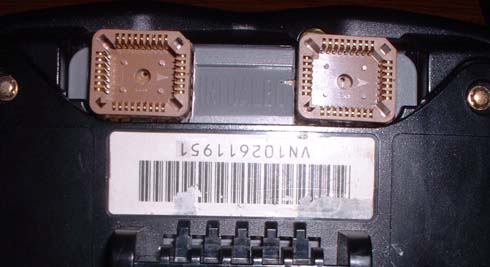Here is my reprogrammable Flash cart, which is based on my EPROM cart, except as you can tell, it is a lot smaller, and to reprogram, the chips are erased inside the device that programs them, so it is a much faster and easier process. Although this cart could have been just as big as my EPROM one, the flash chips I bought are PLCC, which is a lot smaller, but has the same capabilities as the DIP. The biggest problem with using flash chips is that the largest 32 pin flash chip is a 4 megabit chip, so when using 2 of them, you get a 1 megabyte cart, which is fine for most games, but there are some 2 megabyte games out there (although they are fairly common games).
Parts List:
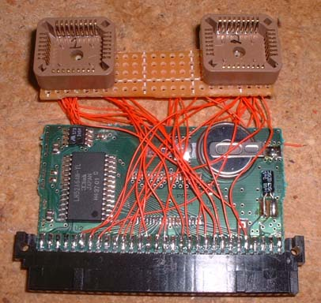
You need - Perfboard, two 32pin PLCC sockets, wrapping wire, and an original VB cart (I used teleroboxer)
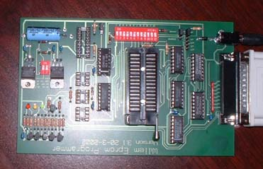
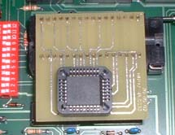
EPROM programmer, I used the Willem EPROM programmer because it supported my chips and more devices and is probably the cheapest one available although slower than my EPROMER. You will also need a PLCC adapter to program these chips. Both are available from www.willem.org.
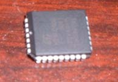
32 pin PLCC chip (mine are 90ns ST M29F040B - 4mbit chips)
And you will also need: a soldering iron, and solder - available at Radio Shack
Building Instructions:

First, to open up a cartridge you need a tool, either you can buy one that fits the cart, or what I did was take an old flat head screwdriver that was about the width of the hole, then notched out the center wide enough to grab the center of the screw.
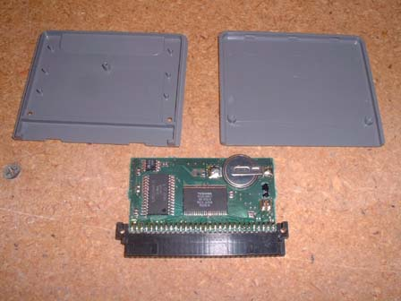
Then you need to open up the cart (which cart you use is up to you, but I picked Teleroboxer because it has battery backed save games and is fairly cheap)

After opening, you need to remove the chip which I did by clamping down the board, taking a chisel to get under the edge of a corner, then use a soldering iron and to melt the solder and pry up with the chisel (the chisel works the best because even a small flat head screwdriver had a hard time getting under the corner of the chip)
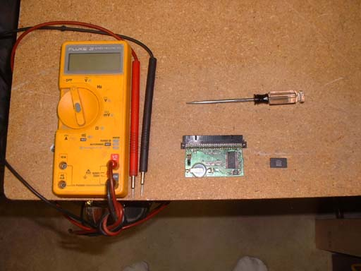
Then you should test to make sure there are no shorts where you desoldered the chip, and if you have to, use a pick to scratch away some excess solder
Through Hole Cart:
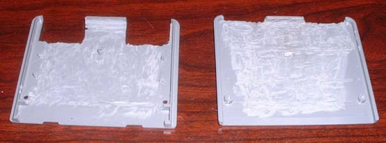
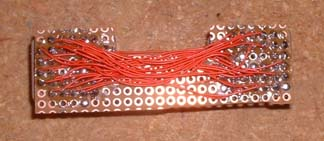
Then you are going to need some perfboard and cut it to fit the cart, then cut the cart casing so the chip socket fits out the bottom - I used a dremel to cut the holes, and also to thin the casing so I have more room for the wires with less pressure on them and less bulge in the casing. Then start jumpering the wires that are in common with both chips (VCC, address lines, GND, /WE, etc)
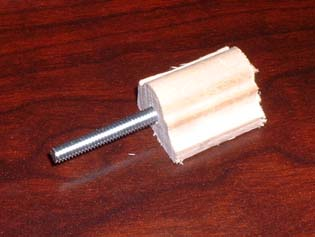
To cut the wires, the fastest way I've found is to decide how long you want the wires, then make a tool to make the wires that length. What I did was found a block of wood the size I wanted, drilled a hole down the middle of it, stuck a screw through it. Then attach it to a drill and it'll quickly make a new spool the length that you want, then just take a knife and cut straight across and all the wires are relatively the same size.
You need to then read this file to find out which wires go where, and this file for the pinout of the throughhole PLCC socket.
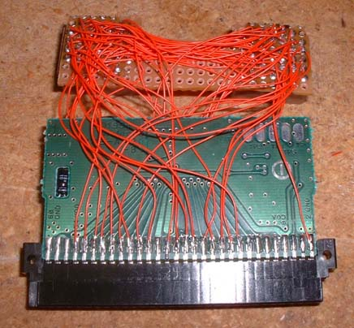
Then you have to solder the wires to each pin individually and connect them to the correct pins. Although that looks like a huge mess, as long as you work on it one pin at a time, it isn't really too difficult, just time consuming.
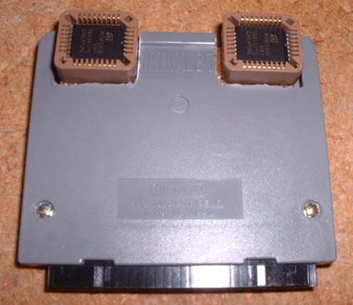
Then after you get the wiers connected, carefully put the the two boards into the cart case and screw it together - this is what it looks like.
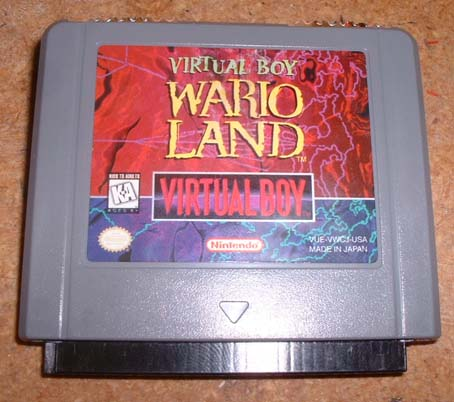
Here's a pic from the front. Now you're ready to program the chips, put them in, and PLAY GAMES!
Here it is from the bottom. As you can see, it is a lot smaller than the eprom cart and looks very nice having no wires exposed.
Surface Mount Cart:
Here's just a few pics of my latest flash cart which uses surface mount sockets, which are a lot lower profile and don't stick out the back any. The wiring of the cart is the same as the through hole, but there's just a few differences that I'll note under the pictures.
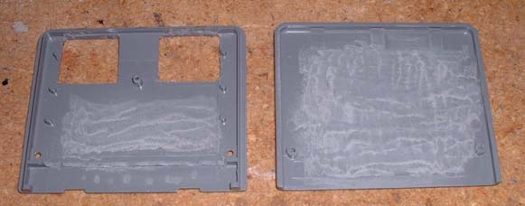
First, you want to start by cutting holes the size of the sockets starting from the back wall of the plastic cart (I used a small drill like bit for the dremel to cut the big part, then used an xacto knife to finish the edges). Then you will want to give yourself some extra room inside the cart, so you should trim away some of the inside of the cart (I used a dremel).
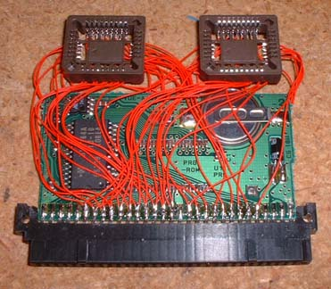
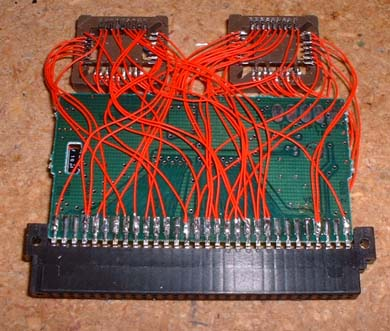
Here you see the wiring of the chip... same as the other cart, except instead of having large through holes, you have smaller surface mount pins (which aren't really THAT hard to solder to). Also notice that I ran every wire to the edge instead of connecting from chip to chip, then from one chip to the edge. That was because with the surface mount chips, there is a lot less room for wires by the chip, so it works out better to run each individually to the edge.
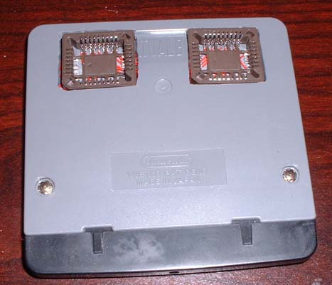
And the finished product, a completely flush socketed flash cart. The other version does have it's advantages though... although it doesn't look as nice, it's easier to swap chips because you can leave the cart in and only remove the chip, where this version you have to pull the cart out slightly to remove the chip. But it may be possible to move the hole back as far as possible and have access to the chip. WOOHOO! Now I can do some quick programming for the link cable with TWO flash carts!
Programming:
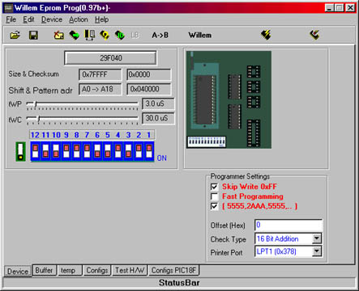
To program, you must first make sure the chips are blank (click erase to be sure, takes about 7 seconds), then select the chip type and rom you want to program. Because we have to use two chips, you must program the High and Low Bytes separately. I believe that you can do it in this program, but I always split the file first, then program the whole file. You must also fill the whole chip up with repeats of the data. After you select the rom, you can put the chip in. Then you can select program chip. It will take about 5 minutes to program a full 512k chip. After the first chip is done, you can put the second chip in and do the same process with the other half of the file. Then put the chips into the cart and you're done!
{kind=link}